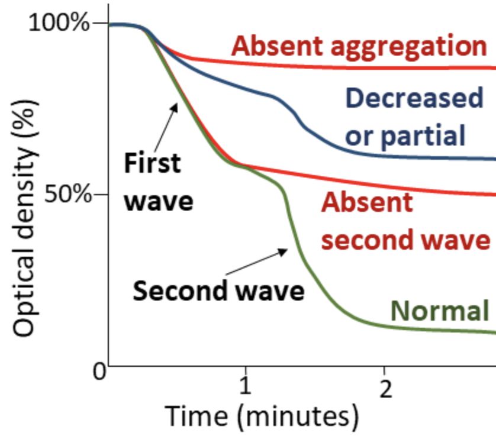

Recognize
Adult-onset mucocutaneous bleeding and a likely acquired platelet disorder.
Case 7 · Coagulation curriculum
Follow a broad, incomplete aggregation defect from an alarming first tracing to the most important finding: reversibility.
Adult-onset mucocutaneous bleeding and a likely acquired platelet disorder.
Read weak-agonist, amplification-dependent, strong-agonist, and ristocetin responses.
Use controlled repeat testing and reversibility—not a supposedly unique signature.
Alcohol does not produce one pathognomonic light-transmission aggregometry pattern. Effects vary with exposure, timing, dose, platelet count, nutrition, liver disease, agonist concentration, and specimen conditions.
Section 2 of 8
Move from bleeding phenotype to a defensible, appropriately cautious laboratory interpretation.
Distinguish acquired from inherited platelet dysfunction using age of onset, family history, exposures, and phenotype.
Describe LTA specimen preparation, optical principles, tracing features, and platelet-count limitations.
Compare ADP, epinephrine, collagen, arachidonic acid, TRAP, and ristocetin responses.
Recognize broad, incomplete weak-agonist hyporesponsiveness without overcalling a single diagnosis.
Assess alcohol timing, medications, specimen quality, platelet count, liver disease, nutrition, and systemic illness.
Use repeat testing and reversibility to support an acquired alcohol-associated interpretation.
When an abnormal result is nonspecific and the specimen was collected after substantial alcohol exposure, what evidence separates association from overdiagnosis?
Section 3 of 8
Platelet disorders produce a primary-hemostasis phenotype even when routine coagulation tests are normal.
Platelets tether to damaged vascular surfaces.
Calcium, granules, ADP, and thromboxane amplify the response.
Activated platelets form an enlarging plug.
Easy bruising, epistaxis, gingival bleeding, and prolonged dental oozing are typical of primary-hemostasis dysfunction. The absence of hemarthroses and deep-muscle hematomas makes a severe coagulation-factor deficiency less likely.
Symptoms began in adulthood, there is no family history, and substantial ongoing alcohol exposure is present.
| Test | Result | Interpretation |
|---|---|---|
| Hemoglobin / MCV | 12.8 g/dL / 104 fL | Mild anemia and macrocytosis |
| Platelet count | 138 × 10⁹/L | Mild thrombocytopenia |
| PT / aPTT / fibrinogen | 13.8 s / 31 s / 315 mg/dL | Screening coagulation pathways preserved |
| VWF antigen / activity | 112 / 105 IU/dL | VWF profile preserved |
| AST / ALT | 82 / 48 U/L | AST-predominant transaminase elevation |
| Albumin / bilirubin / INR | 4.0 g/dL / 0.9 mg/dL / 1.1 | Advanced hepatic synthetic failure less likely as the primary explanation |
Heavy alcohol use may impair platelet production, survival, and function, but folate deficiency, liver disease, medications, and other acquired causes may coexist.
Section 4 of 8
A defensible aggregation interpretation begins before the specimen enters the aggregometer.
The patient drank the preceding evening. Recent alcohol may directly change platelet responses, so the exact timing and approximate amount must be documented.
Delay diagnostic testing until the laboratory’s validated abstinence interval; exclude aspirin, NSAIDs, P2Y₁₂ inhibitors, SSRIs, valproate, herbs, and supplements.
Do not recommend abrupt unsupervised abstinence in a person with possible physiologic dependence. Coordinate medically supervised withdrawal when indicated.
Atraumatic venipuncture into properly filled 3.2% sodium citrate tubes.
No clot, hemolysis, lipemia, IV-line draw, or transport problem.
Low-force spin for PRP; higher-force spin for PPP.
Use a parallel control and interpret optical amplitude cautiously at a lower count.
Platelet-rich plasma is turbid. An agonist is added to stirred PRP at approximately 37°C.
Platelet-poor plasma is clear. Aggregation clears PRP and increases measured light transmission.

| Agonist | Initial pattern | Teaching implication |
|---|---|---|
| Low-dose ADP | 31%; absent secondary wave; disaggregation | Initiation present, amplification impaired |
| High-dose ADP | 53%; reduced and not sustained | Stronger stimulus only partly overcomes defect |
| Epinephrine | 24%; no secondary wave | Supports secretion/amplification weakness |
| Low/high collagen | 25% / 58% | Concentration-dependent partial impairment |
| Arachidonic acid | 38%; delayed and unsustained | Consider COX inhibition, thromboxane impairment, or broad acquired defect |
| TRAP | 69%; substantially preserved | Strong activation and GPIIb/IIIa function remain possible |
| High-dose ristocetin | 76%; preserved | VWF–GPIb function intact |
After four weeks of medically supervised abstinence, no platelet-active drugs, nutritional assessment, and clinical follow-up, the platelet count rises from 138 to 224 × 10⁹/L. ADP secondary aggregation returns; epinephrine, collagen, arachidonic acid, and TRAP normalize; ristocetin remains preserved.
Normalization establishes reversibility and temporal association. It is more persuasive than the initial nonspecific panel and argues against a persistent inherited receptor or secretion defect.
Section 5 of 8
Each agonist asks a different functional question. Explore the pathway, initial response, and appropriate inference.
Loss of secondary waves, disaggregation, and reduced low-dose responses may reflect impaired dense-granule release or secondary signaling.
Ethanol has been reported to interfere with calcium-dependent activation and secretion pathways.
Reduced arachidonic-acid and collagen responses and poor sustainability may involve thromboxane-dependent signaling.
Some studies report reduced adhesion or thrombus deposition under shear even when conventional aggregation findings vary.
Heavy chronic exposure may suppress production, cause ineffective megakaryopoiesis, or shorten platelet survival.
Functional impairment, mild thrombocytopenia, nutrition, and liver disease may coexist in the same patient.
Experimental observations do not create a unique clinical LTA signature. Exposure conditions and patient factors can yield neutral, inhibited, or occasionally increased responses.
Section 6 of 8
Commit to an interpretation before the next diagnostic layer is revealed.
| Disorder/exposure | ADP/epinephrine | Arachidonic acid | Ristocetin | Helpful distinction |
|---|---|---|---|---|
| Alcohol-associated dysfunction | Variable; secondary waves may fall | May be reduced | Usually preserved | Improves after abstinence |
| Aspirin effect | Secondary amplification reduced | Usually markedly absent | Preserved | Drug exposure and platelet turnover |
| P2Y₁₂ inhibition | ADP markedly reduced | Usually preserved | Preserved | Drug history or specific testing |
| Glanzmann thrombasthenia | Broadly absent | Absent | Preserved | Lifelong bleeding; GPIIb/IIIa deficiency |
| Bernard–Soulier syndrome | Generally preserved | Preserved | Absent | Giant platelets; GPIb deficiency |
| Dense-granule disorder | Secondary waves reduced | Often preserved | Preserved | Persistent pattern; secretion studies |
Section 7 of 8
Ten questions with immediate explanations. Your score remains only on this device.
Section 8 of 8
The best evidence is temporal, controlled, and reversible—not a single tracing shape.
The initial study showed broadly reduced responses to ADP, epinephrine, collagen, and arachidonic acid, with diminished secondary aggregation, relative preservation of a strong TRAP response, and preserved ristocetin-induced agglutination. Following substantial recent alcohol exposure, these findings were nonspecific. Repeat testing after documented abstinence showed normalization of platelet aggregation and recovery of the platelet count, supporting a reversible acquired platelet dysfunction associated with heavy alcohol use.
Broad, incomplete hyporesponsiveness—greatest with weak agonists and secretion-dependent responses.
ADP secondary wave restored; epinephrine, collagen, arachidonic acid, and TRAP normalized; ristocetin remained preserved.
Alcohol-associated platelet dysfunction is a nonspecific, often reversible acquired defect that may reduce secretion-dependent aggregation, weaken responses to low-dose agonists, and coexist with thrombocytopenia.
Educational use only. Agonist concentrations, reference intervals, abstinence requirements, specimen criteria, and reporting language must follow the laboratory’s validated procedures and clinical safety protocols.